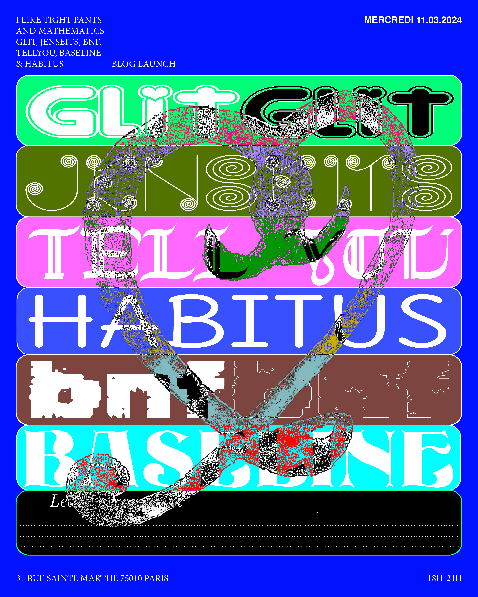
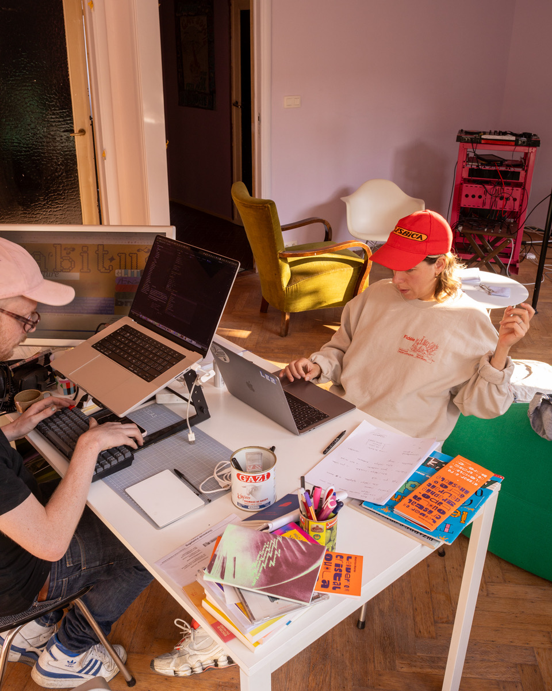
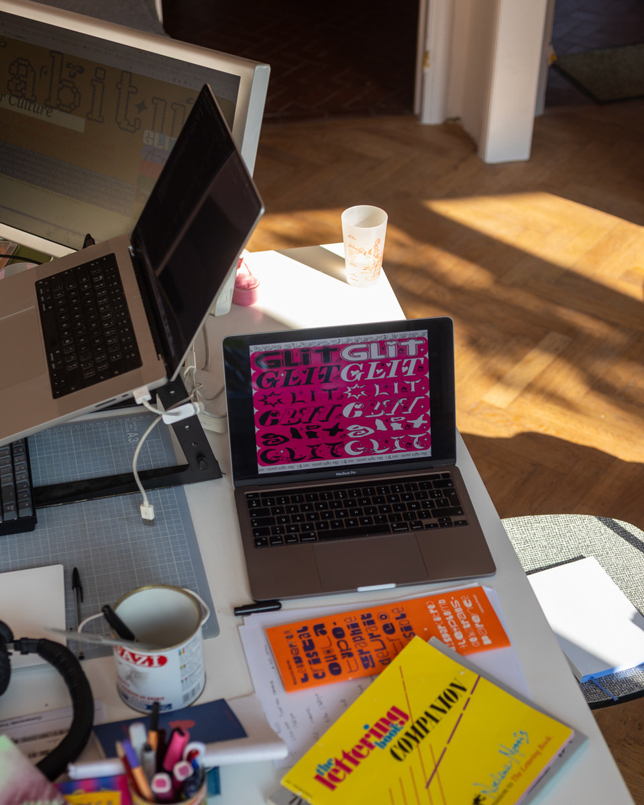

Design Roxanne Maillet
Read in English Lire en français
In the early 2010’s, author, artist and designer Eric Schrijver edited the weblog I like tight pants and mathematics. It probed the cultural clashes between the subcultures of software development and those of art and design. The title is a juxtaposition: there is no inherent opposition between tight pants and mathematics. The opposition is evoked through being part of two semantic fields, one of which, mathematics, being linked to the cultural figure of the nerd that continues to shape thinking around technological competency.
« I like tight pants and mathematics » est un blog culte du début des années 2010, édité par l’auteur, artiste et designer Eric Schrijver. Le blog sonde les frictions entre les milieux du développement logiciel et ceux de l’art et du design. Le titre est une juxtaposition : il n’existe aucune opposition naturelle entre les pantalons moulants et les mathématiques. Pourtant, ce titre évoque deux champs sémantiques distincts, dont l’un reste attaché à la figure du nerd, qui continue de structurer l’imaginaire collectif autour de la compétence technologique.
This March we relaunch the blog at le29, with a focus on a new experiment that asks: is an alternative aesthetic for consumer electronics feasible? Could we conceive of technological objects that aren’t afraid to take up space, to wear colour, to be hacked — that are not smooth, clean, and straight? And could such an aesthetic help accept the more bulky, modular, wired objects that would tax our environment less?
Le 11 mars, nous relançons le blog chez le29, autour d’une nouvelle expérimentation : est-ce qu’une autre esthétique pour l’électronique est possible ? Est-ce qu’on peut imaginer des objets technologiques qui n’ont pas peur de prendre de la place, de porter de la couleur, d’être hackés—qui ne soient pas lisses, clean, straight ? Et est-ce qu’une telle esthétique pourrait nous aider à accepter des objets plus volumineux, modulaires, filaires, donc potentiellement moins violents pour l’environnement ?
The design of everyday electronics is never neutral. Devices such as smartphones, laptops, and headphones are deliberately shaped around minimalist aesthetics that hide vast infrastructures of extraction and exploitation. The cultural codes of technology also reinforce social hierarchies with regressive design. The nerd, who is linked to masculinity and whiteness, functions not as an underdog, but rather as complicit in hegemonic (straight) masculinity. The cultural figure acts as a gatekeeper around technology, convincing the larger public they are not apt to repair or manipulate their devices themselves, and letting the industry get away with producing irreparable locked down devices.
Le design des objets électroniques du quotidien n’est jamais neutre. Les smartphones, les laptops, les casques audio sont dessinés selon une esthétique minimaliste qui masque des infrastructures massives d’extraction et d’exploitation. Les codes culturels de la technologie rejouent aussi des hiérarchies sociales régressives. Le nerd—lié à une masculinité blanche et hétéro—ne fonctionne pas comme un underdog, mais comme un allié discret d’une masculinité hégémonique. Cette figure agit comme un gatekeeper : elle installe l’idée que réparer ou modifier ses appareils serait réservé aux initiés, pendant que l’industrie verrouille, scelle et rend les objets irréparables.
The blog is structured around six authors: glit the glamorous, bnf the technical, habitus the critical, tellyou the didactical, baseline the graphical, jenseits the mystical. They write the articles and respond to each other in the comment sections. This form allows for multi-voiced narration faithful to the medium of the web. The comments are open to the public, who regularly slip into the conversations between characters — and vice versa.
Le blog est structuré autour de six auteur·ices : glit le·la glamour, bnf le·la technique, habitus le·la critique, tellyou le·la didactique, baseline le·la graphique, jenseits le·la mystique. Iels écrivent des articles, se répondent dans les commentaires et se contredisent parfois. Cette forme polyphonique est fidèle au médium web : les voix se superposent, le débat devient performance. Les commentaires sont ouverts, le public s’invite dans la fiction, les personnages répondent aux lecteur·ices et inversement.
The design is by Roxanne Maillet. Interested in lesbian semiotics and language strategies of resistance developed from the margins, her work takes the form of collective readings, publications, and typographic experiments across multiple media. Her style is particularly bold and colourful and resists existing notions of good taste.
Le design est de Roxanne Maillet. Elle s’intéresse à la sémiotique lesbienne est aux stratégies langagières contre oppressive mise en place depuis les marges. Son travail prend la forme de lectures collectives, de publications et d’expérimentations typographiques sur différents supports. Son style est coloré, in your face et résiste aux bon goût.
At le29, researcher Julie Blanc, whose Phd deals with graphic designers using web technologies for print, will interview the authors about their collaboration, allowing those present a first peak at the project. Roxanne makes cheeky cocktails. A custom red button is wired up to launch the site to the public.
À le29, la chercheuse Julie Blanc, dont la thèse explore les pratiques de designers graphiques qui utilisent les technologies web pour l’impression, interrogera les six auteur·ices sur leur collaboration, offrant au public un premier aperçu du projet. Roxanne prépare des cocktails cheeky. Un bouton rouge custom est câblé pour lancer officiellement le site en ligne.
I like tight Pants and Mathematics was redeveloped as part of an artistic research project with support of the FNRS/FRArt, accompagnied by art/recherche, in collaboration with art school ESA le75.
I like tight pants and mathematics a été redéveloppé dans le cadre d'une recherche artistique soutenue par le FNRS/FRArt, avec l'accompagnement d’art/recherche) et en collaboration avec l’ESA le75.

